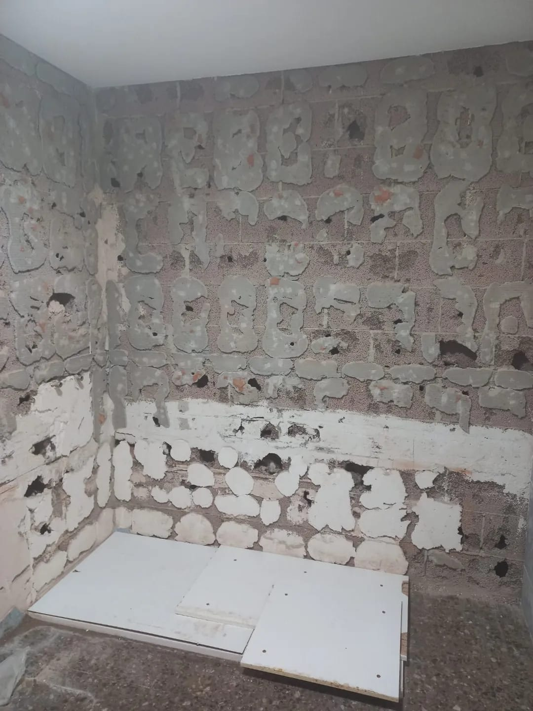
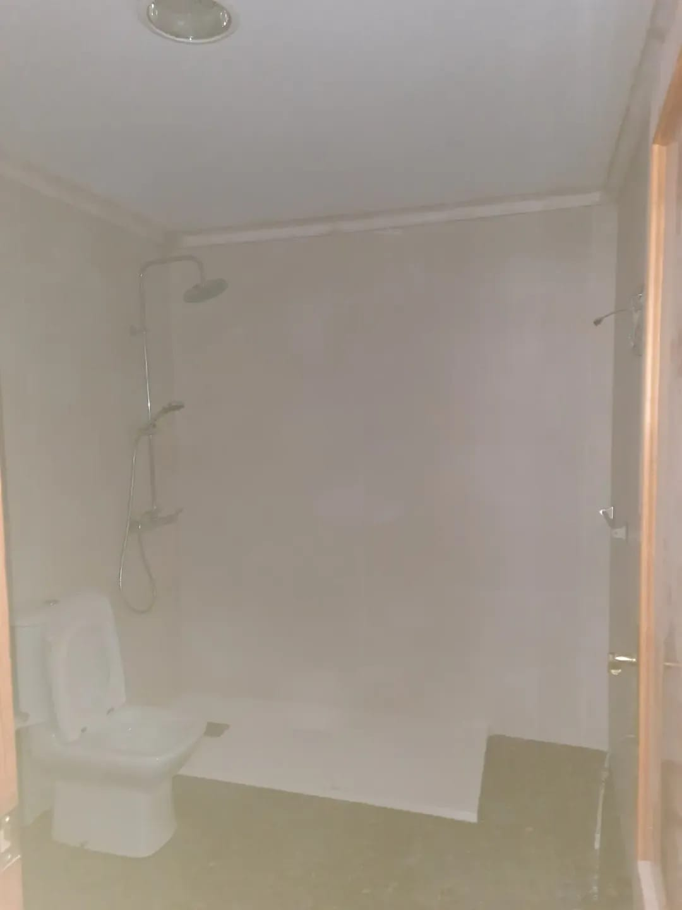
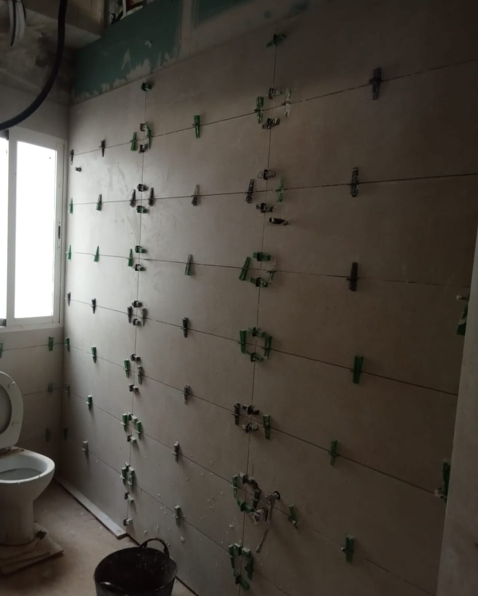

Esta obra fue una pequeña reforma de baño que hicimos entre Sagunto y Canet. El encargo consistía en instalar un plato de ducha, alicatar todas las paredes y organizar un cielo raso con moldura perimetral en la parte del techo. La petición de los propietarios era muy clara: el suelo de terrazo que tenían estaba en buen estado y no querían cambiarlo, así que lo dejamos tal y como estaba, haciendo un remate quirúrgico entre el plato nuevo y el terrazo existente.
CRÓNICA DE OBRA REAL
Sagunto y Canet · Dos Intervenciones Reales
Oficio Frente a los Imprevistos: Las Reformas de Baño en Sagunto y Canet
Por Fabio Toro · Oficial Maestro de Albañilería · Maestros de la Construcción
Haz clic sobre cualquier fotografía para verla a pantalla completa en alta resolución
 1. Inicio y Demolición
Ampliar foto
1. Inicio y Demolición
Ampliar foto
Fase de inicio: Picado de la zona húmeda previa sin dañar el pavimento de terrazo del resto del aseo.

2. Base y Tuberías de Ducha Ampliar foto
Solera impermeable: Recrecido con desagüe de gran caudal y preparación de tomas para la nueva ducha.
En este proyecto tuvimos una de esas anécdotas reales de la obra: durante la manipulación se fracturó la mampara original. En vez de poner parches o discutir, asumimos el contratiempo al instante y montamos una nueva mampara fija de cristal de seguridad templado con perfilería minimalista en aluminio anodizado. Las paredes quedaron alicatadas con azulejo blanco satinado, el techo rematado con su moldura decorativa y el plato de ducha integrado a cota limpia con el suelo de terrazo.

3. Detalle de Ducha y Mampara Ampliar foto
La mampara nueva: Montaje de mampara fija de cristal de seguridad tras el imprevisto de obra, perfectamente sellada.
 4. Baño Entregado
Ampliar foto
4. Baño Entregado
Ampliar foto
Acabado impecable: Ducha operativa, suelo original de terrazo conservado y techo con moldura de escayola.
CASO PUNTUAL EN SAGUNTO
La Pared de Sagunto: Rescate de una Obra Tirada
Esta pared que veis aquí es de otra obra completamente diferente en Sagunto. La familia había contratado a otros albañiles para reformar su baño y les dejaron la obra totalmente tirada a la mitad: paredes desplomadas, piezas mal cortadas y escombros abandonados. Me llamaron desesperados y acudí a rematar el trabajo: nivelamos con láser, colocamos el revestimiento vertical con cuñas autonivelantes y les entregué la pared con un plano perfecto y las esquinas aplomadas al milímetro.

5. La Pared Rescatada en Sagunto Ampliar foto
Obra terminada con seriedad: Paramento aplomado con cuñas de nivelación tras rescatar un baño que otra cuadrilla dejó a medias.
¿Tienes una reforma parada o necesitas hacer tu baño en Sagunto y comarca?
Acudimos a medir sin compromiso. Te damos un presupuesto detallado, plazos estrictos y la tranquilidad de tratar con albañiles de confianza.